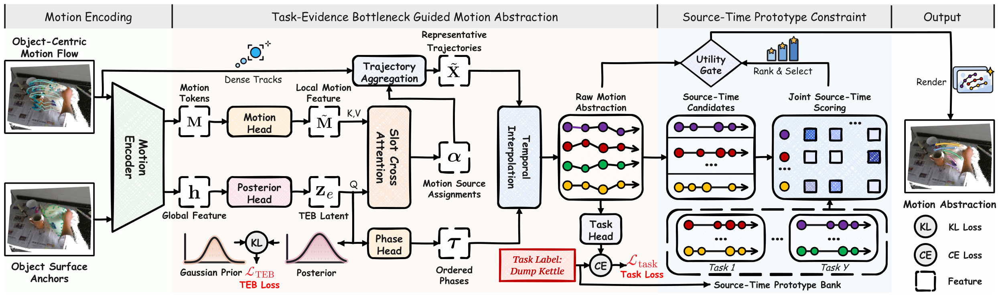
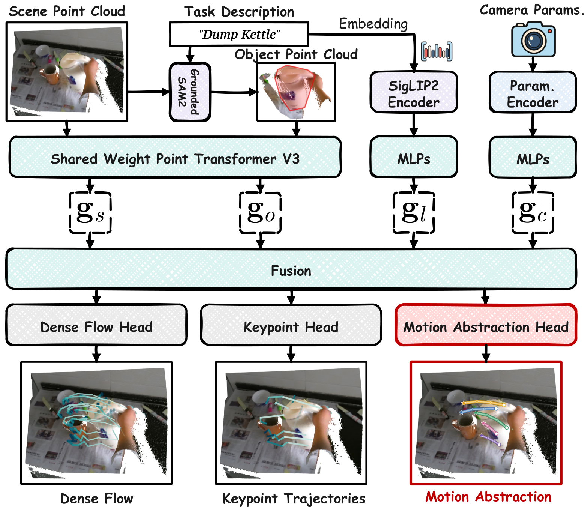
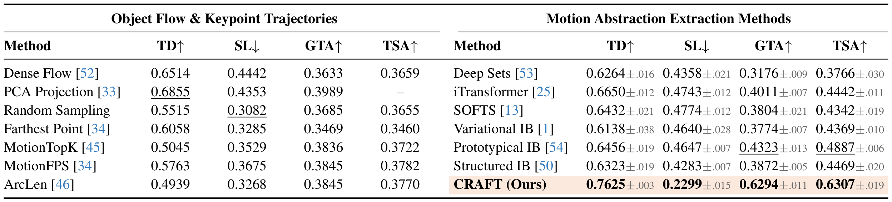
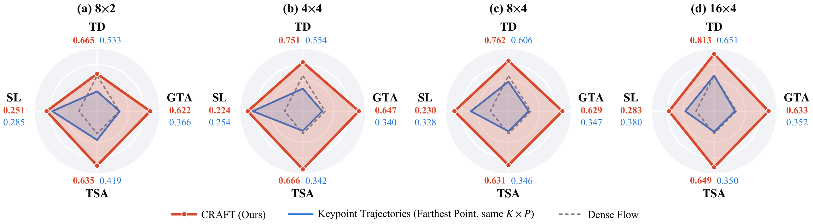
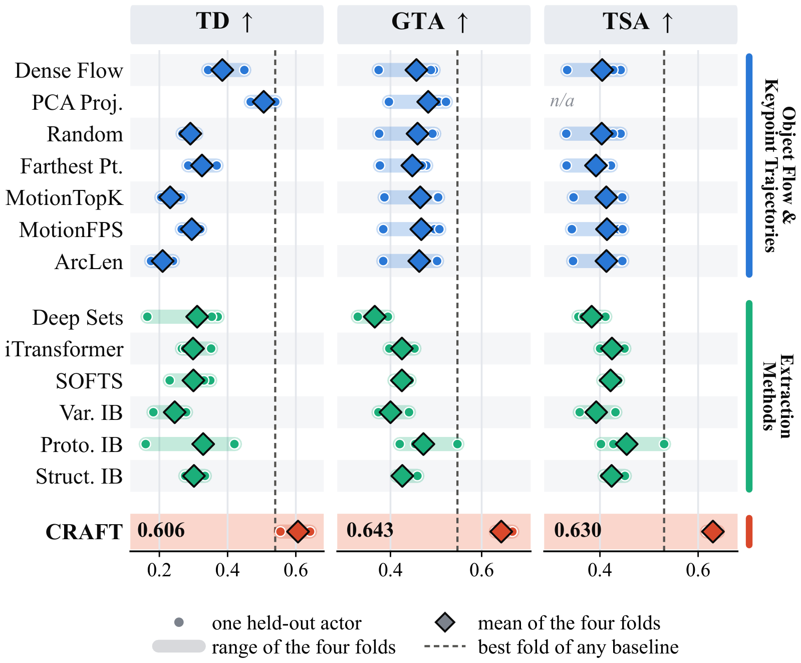
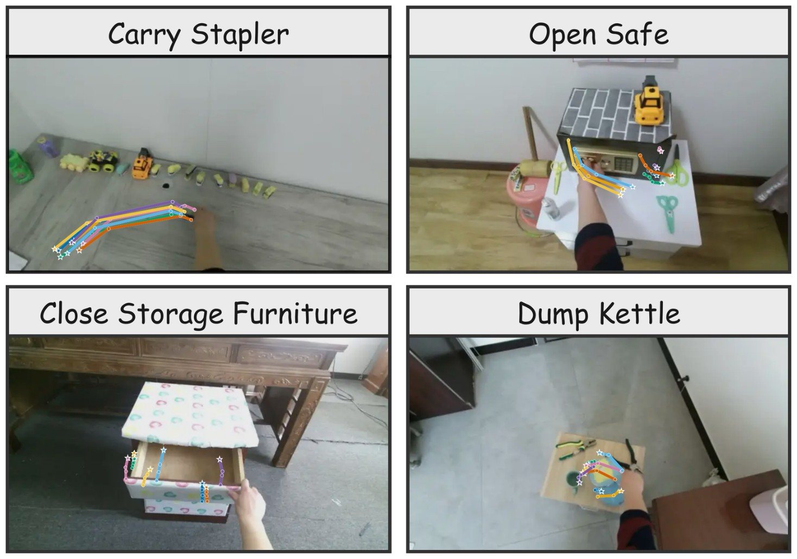
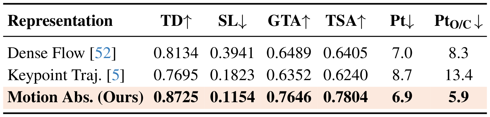
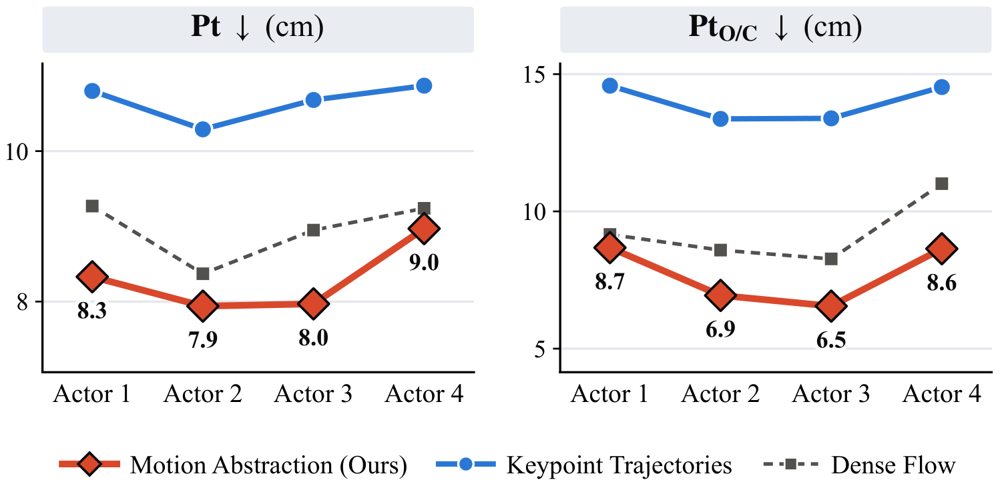
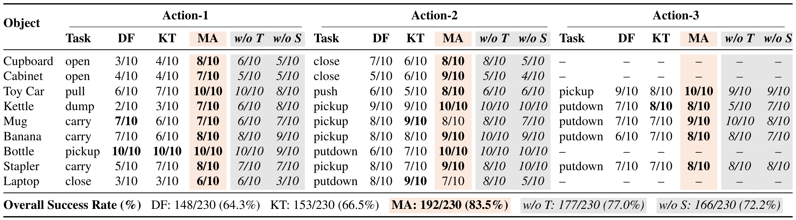
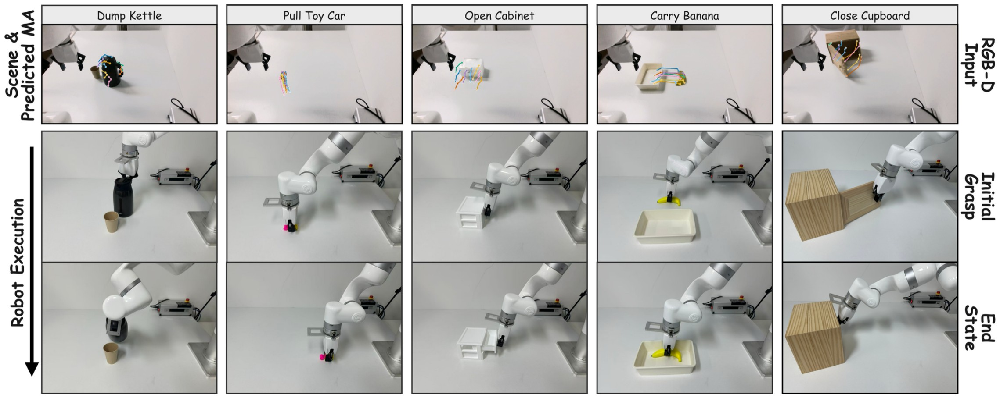

Transferring manipulation skills from human demonstrations to robots requires bridging the embodiment gap, yet constructing motion features largely independent of execution conditions remains challenging. Existing methods build object-centric motion representations but tend to entangle task evidence with task-irrelevant execution variation, limiting transfer efficiency. Recognizing that these intertwined signals are driven by distinct factors and thus separable, in this paper, we propose Object-Centric Motion Abstractions for Human-to-Robot Skill Transfer (CRAFT), which extracts structured representations from object motion through conditioned information separation, reducing their dependence on execution style. This design emphasizes task-essential motion, but poses two challenges: information disentanglement under task-label-only supervision, and cross-instance structural convergence without explicit pairing. To address these, we introduce two mechanisms: the Task-Evidence Bottleneck reduces task-irrelevant information through variational compression, and the Source-Time Prototype Constraint aligns structure across same-task instances by prototype matching. Furthermore, we predict motion abstractions directly from RGB-D observations and use them for robot manipulation. Experiments show that the proposed motion abstraction exhibits higher representation quality than existing alternatives. This advantage is also reflected in real-robot execution: across 23 object–action combinations, it achieves a success rate of 83.5%, compared with 64.3% for Dense Flow and 66.5% for Keypoint Trajectories, demonstrating its utility for human-to-robot skill transfer.
Open Cupboard
Close Cupboard
CRAFT has two stages. In Motion Representation Extraction (MRE), it constructs motion abstractions from human demonstrations: spatial source anchors on the object surface and ordered temporal phases that jointly encode the spatiotemporal structure of the task. In Motion Representation Prediction (MRP), a model learns to predict them from an RGB-D observation and a task description, and the prediction is executed on the robot.

CRAFT pipeline. The Motion Encoder extracts local and global motion features, which the Task-Evidence Bottleneck filters into a raw motion abstraction. The Source-Time Prototype Constraint then aligns it to its task prototype, producing the final motion abstraction.

MRP pipeline. One model with this architecture is trained per representation, and only the prediction head differs.

Representation-quality comparison for MRE. TD, SL, GTA, and TSA denote Task Decodability, Style Leakage, Geometry–Task Alignment, and Temporal-Structure Alignment. Arrows indicate the preferred direction. Bold marks the best result, and underlining marks the strongest baseline for each metric. Learned methods (right) are means over three training seeds (±: std. dev.).

Source–phase slot robustness across K×P configurations. Outward is better on every axis (SL is reversed); CRAFT encloses Keypoint Trajectories of the same budget in all four configurations.

MRE on unseen actors (leave-one-actor-out). SL is undefined with a single test actor; GTA is its task term only.

Qualitative MRP results across four manipulation tasks. The predicted source–phase trajectories are overlaid on the motion-start RGB frames.

Prediction quality of the three MRP models. Pt, PtO/C: median point error (cm), all and open/close actions.

MRP on unseen actors (leave-one-actor-out). The motion abstraction has the lowest point error on every actor.
The real-robot setup uses a UFACTORY xArm 7 with a UFACTORY Gripper G2 and an Intel RealSense D435. The evaluation covers 23 object–action combinations across nine objects, with 10 trials each and object repositioning between trials. The tasks follow HOI4D categories, while the object instances, the scenes, and the robot are unseen by the predictor, which is trained only on human videos with no fine-tuning on robot data.

Real-world success rates across nine objects and 23 object–action combinations. DF, KT, and MA are Dense Flow, Keypoint Trajectories, and Motion Abstraction; w/o T and w/o S (gray) are MA without TEB and without ST-PTC. Each cell gives successes out of 10 independent trials; bold marks the best of DF, KT, and MA.

Qualitative real-world executions driven by predicted motion abstractions. Each column shows one task: the RGB-D input with predicted source–phase trajectories, initial grasp, and end state from top to bottom.
@article{zhang2026craft,
title = {CRAFT: Learning Object-Centric Motion Abstractions for Human-to-Robot Skill Transfer},
author = {Zhang, Zichen and Zhang, Xuji and Zhai, Wei and Di, Jian and Li, Kun and Cao, Yang and Lv, Wenjun},
journal = {arXiv preprint},
year = {2026}
}